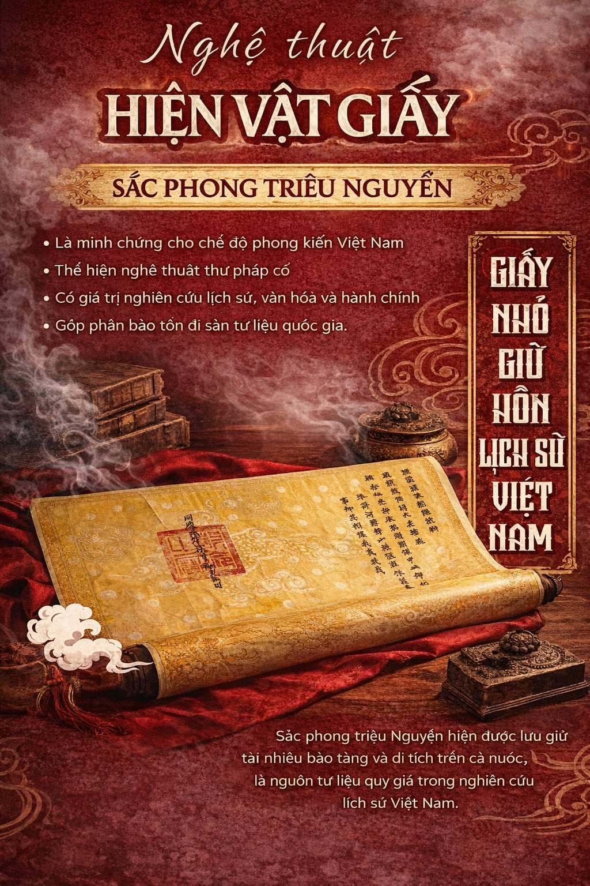

Sắc phong triều Nguyễn là những văn bản hành chính đặc biệt do hoàng đế ban hành, mang ý nghĩa sâu sắc về cả phương diện lịch sử, văn hóa và tinh thần. Đây không chỉ là minh chứng cho quyền lực tối cao của triều đình phong kiến, mà còn thể hiện sự ghi nhận, tôn vinh những đóng góp của cá nhân, cộng đồng và các vị thần linh trong đời sống xã hội Việt Nam.
Giá trị lịch sử và văn hóa:
Sắc phong phản ánh rõ nét cơ cấu tổ chức xã hội, tín ngưỡng dân gian và tư tưởng chính trị của thời kỳ phong kiến. Mỗi sắc phong là một tài liệu quý, giúp hậu thế hiểu rõ hơn về quá khứ, về truyền thống “uống nước nhớ nguồn” của dân tộc Việt Nam.
Nghệ thuật chế tác và thư pháp:
Sắc phong được viết trên giấy dó – loại giấy truyền thống có độ bền cao. Hoa văn trang trí thường là rồng, phượng, mây, sóng – biểu tượng của quyền lực và sự linh thiêng. Nét chữ thư pháp uyển chuyển, tinh tế, kết hợp cùng ấn triện đỏ tạo nên vẻ đẹp trang nghiêm, đậm chất nghệ thuật cung đình Huế.
Giá trị bảo tồn và phát huy:
Ngày nay, sắc phong không chỉ là di sản vật thể mà còn là nguồn tư liệu quan trọng phục vụ nghiên cứu lịch sử, văn hóa và giáo dục truyền thống. Việc bảo tồn, số hóa và quảng bá sắc phong góp phần giữ gìn bản sắc dân tộc và lan tỏa giá trị văn hóa Việt Nam đến cộng đồng quốc tế.
Sắc phong – không chỉ là một văn bản cổ, mà là linh hồn của lịch sử và niềm tự hào của dân tộc Việt Nam.